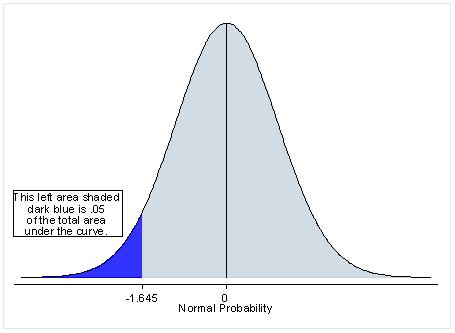
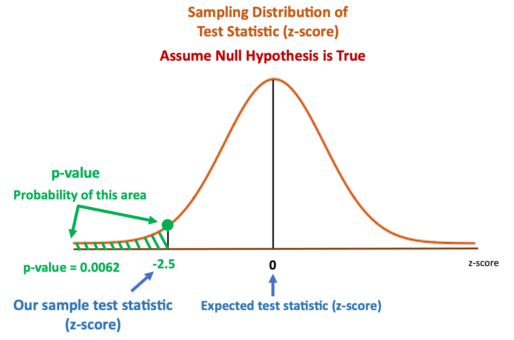
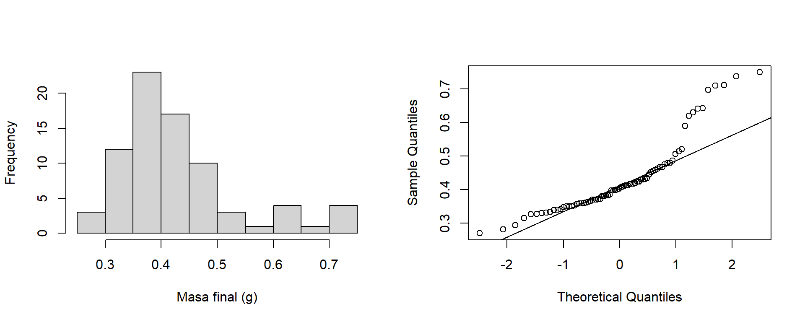

Pregunta de investigación: ¿la escasez de alimento cambia el tiempo que tardan los renacuajos en reabsorber la cola?
Hipótesis nula, \(H_0\): no hay diferencia, \(\mu_{Hi} = \mu_{Lo}\).
Hipótesis alternativa, \(H_1\): sí hay diferencia, \(\mu_{Hi} \neq \mu_{Lo}\).
La prueba estadística mide qué tan compatibles son los datos con \(H_0\).
Tipos de errores
\(H_0\) es verdadera
\(H_0\) es falsa
Rechazamos\(H_0\)
Error tipo I (\(\alpha\))
Correcto (potencia, \(1 - \beta\))
No rechazamos\(H_0\)
Correcto
Error tipo II (\(\beta\))
. . .
\(\alpha\), el nivel de significancia, lo fijamos nosotros: por lo general 0.05.
La potencia crece con el tamaño de la muestra y con el tamaño del efecto.
Pruebas de dos colas y de una cola
Dos colas: \(H_1: \mu \neq \mu_0\)

Una cola: \(H_1: \mu > \mu_0\)
En R: alternative = "two.sided" (por defecto), "greater" o "less".
El valor p

Es la probabilidad de obtener datos tan extremos como los nuestros, o más, si\(H_0\) fuera verdadera.
Si \(p < \alpha\), rechazamos \(H_0\).
No es la probabilidad de que \(H_0\) sea verdadera.
No dice si el efecto es grande o importante: para eso, mira la diferencia y su intervalo.
Pruebas t
Supuestos
Observaciones independientes.
Datos (o diferencias) con distribución normal, o una muestra grande.
Para dos muestras independientes: varianzas homogéneas (solo para la prueba de Student).
. . .
par(mfrow =c(1, 2))hist(ranas$Mass.final, main ="", xlab ="Masa final (g)")qqnorm(ranas$Mass.final, main =""); qqline(ranas$Mass.final)

Normalidad: Shapiro-Wilk
\(H_0\): los datos vienen de una distribución normal.
shapiro.test(ranas$Mass.final)
Shapiro-Wilk normality test
data: ranas$Mass.final
W = 0.84713, p-value = 1.717e-07
. . .
Con muestras grandes, Shapiro-Wilk detecta desviaciones mínimas y sin importancia. Mira siempre también el gráfico Q-Q.
Prueba t de una muestra
¿Es la masa media al salir del agua distinta de 0.40 g?
t.test(ranas$Mass.final, mu =0.40)
One Sample t-test
data: ranas$Mass.final
t = 2.4427, df = 77, p-value = 0.01687
alternative hypothesis: true mean is not equal to 0.4
95 percent confidence interval:
0.4055686 0.4546950
sample estimates:
mean of x
0.4301318
Prueba t de muestras independientes
¿Difiere la longitud final entre renacuajos de eclosión temprana (E) y tardía (L)?
var.test(SVL.final ~ Hatch, data = ranas)
F test to compare two variances
data: SVL.final by Hatch
F = 1.51, num df = 38, denom df = 38, p-value = 0.2085
alternative hypothesis: true ratio of variances is not equal to 1
95 percent confidence interval:
0.7918426 2.8796646
sample estimates:
ratio of variances
1.510047
. . .
t.test(SVL.final ~ Hatch, data = ranas)
Welch Two Sample t-test
data: SVL.final by Hatch
t = 0.6054, df = 72.986, p-value = 0.5468
alternative hypothesis: true difference in means between group E and group L is not equal to 0
95 percent confidence interval:
-0.4529452 0.8481748
sample estimates:
mean in group E mean in group L
19.48009 19.28247
Student o Welch
Por defecto, t.test() hace la prueba de Welch, que no supone varianzas iguales. Por eso sus grados de libertad tienen decimales.
La prueba de Student clásica necesita var.equal = TRUE.
Si las varianzas son parecidas, las dos dan casi lo mismo. Si no lo son, Welch es la segura.
. . .
t.test(SVL.final ~ Hatch, data = ranas, var.equal =TRUE)$p.value
[1] 0.546719
Prueba t de muestras emparejadas
Datos sleep, incluidos en R: horas extra de sueño de los mismos 10 pacientes con dos medicamentos.
Shapiro-Wilk normality test
data: droga_2 - droga_1
W = 0.82987, p-value = 0.03334
. . .
t.test(droga_2, droga_1, paired =TRUE)
Paired t-test
data: droga_2 and droga_1
t = 4.0621, df = 9, p-value = 0.002833
alternative hypothesis: true mean difference is not equal to 0
95 percent confidence interval:
0.7001142 2.4598858
sample estimates:
mean difference
1.58
Las pruebas de Wilcoxon comparan rangos (posiciones) en lugar de medias.
No suponen normalidad, pero sí observaciones independientes.
Una muestra: ¿la mediana es distinta de un valor de referencia?
Dos muestras (también llamada de Mann-Whitney): ¿un grupo tiende a tener valores más altos que el otro?
. . .
shapiro.test(ranas$Age.FromEmergence)
Shapiro-Wilk normality test
data: ranas$Age.FromEmergence
W = 0.82366, p-value = 3.143e-08
Wilcoxon para una y dos muestras
¿La mediana de la edad al salir del agua es distinta de 20 días?
wilcox.test(ranas$Age.FromEmergence, mu =20)
Wilcoxon signed rank test with continuity correction
data: ranas$Age.FromEmergence
V = 2106, p-value = 0.004891
alternative hypothesis: true location is not equal to 20
. . .
¿Difiere entre eclosión temprana y tardía?
wilcox.test(Age.FromEmergence ~ Hatch, data = ranas)
Wilcoxon rank sum exact test
data: Age.FromEmergence by Hatch
W = 633, p-value = 0.2047
alternative hypothesis: true location shift is not equal to 0
Otra opción: transformar
Si los datos tienen una cola larga a la derecha, una transformación puede acercarlos a la normalidad y permitir la prueba t.
par(mfrow =c(1, 2))hist(ranas$Age.FromEmergence, main ="En días", xlab ="Edad al salir del agua")hist(log(ranas$Age.FromEmergence), main ="En logaritmo", xlab ="log(edad)")